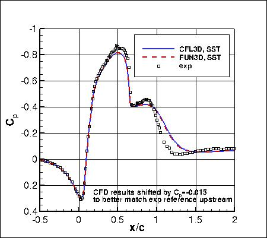
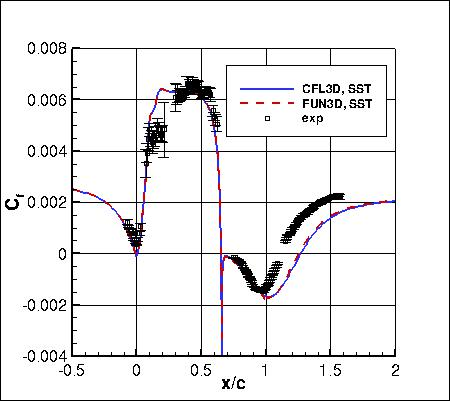
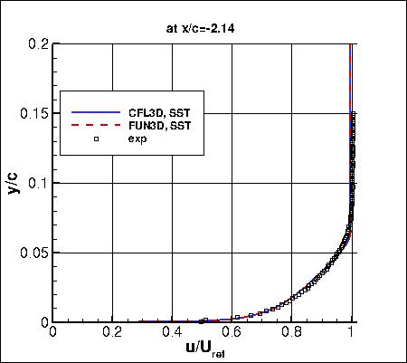
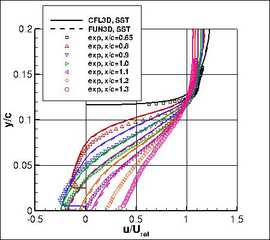
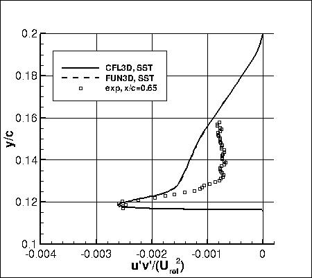
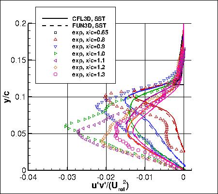
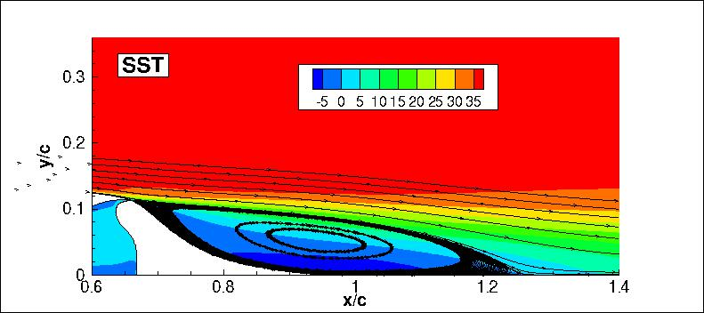

Public Access (formerly Langley Research Center)Turbulence Modeling Resource |
Jump to: SA Results, SSG/LRR-RSM-w2012 Results, K-kL-MEAH2015m Results
Return to: 2D NASA Wall-Mounted Hump Separated Flow Case Intro Page
Return to: Turbulence Modeling Resource Home Page
2D NASA Wall-Mounted Hump Separated Flow Validation Case
SSTm Model Results
Link to SSTm equations
Note this case can also be run on grids WITHOUT a plenum; see:
2D NASA Wall-Mounted Hump Separated Flow Validation Case (no plenum) SSTm page.







Previously on this page the results were reported as SST solutions, but more properly they should be referred
to as SSTm. Essentially no difference is expected.
Note that thorough
grid studies were not performed for validation cases such as this one.
Some effort was made to ensure reasonable grid resolutions, but there may still be
small noticeable discretization errors. Therefore, these validation results shown should be considered
representative, but not "truth."
The plots shown compare the SSTm results from two independent
CFD codes: CFL3D and FUN3D, along with experimental data.
The CFD codes predict the flow separation to occur at x/c = 0.653 and reattachment near x/c = 1.25-1.27
(in experiment these were 0.665 and 1.1, respectively).
Both CFL3D and FUN3D used freestream turbulence intensity=0.077% and freestream turbulent viscosity (relative to laminar)=0.009
(additional details can be found in the CFL3D User's Manual, Appendix H).
Please read note 5 on Notes on running CFD page.
These results are from the "fine" grid from the CFDVAL2004 workshop (210,060 points).
Note that for this particular case the SSTm model converged somewhat poorly toward a steady-state result in both codes.
There were very small oscillations in integrated forces that decreased in magnitude only very slowly.
The computations were stopped when the solutions were deemed "steady enough" in the sense that
further iterations did not produce any noticeable change in plotted values.
As seen above, both codes gave results that were reasonably close on this grid.
It is likely that an even finer grid than the current "fine" level would be needed to bring the CFD results
for u'v' in the separated region closer together.
Note that these are compressible code results at "essentially incompressible" conditions of M=0.1.
There may be a very small influence of compressibility.
Also note that the CFD's reference pressure is different from the experiment (to attain the same reference dynamic pressure);
so a shift is necessary to align the Cp levels.
The data files from CFL3D are given here:
nasahump_cfl3d_cp_sst.dat,
nasahump_cfl3d_cf_sst.dat,
nasahump_cfl3d_vel_sst.dat (corrected 07/08/2022),
nasahump_cfl3d_uv_sst.dat,
(Note: the profiles have been interpolated using Tecplot software onto pre-set points, that may or may
not correspond to the actual grid points or grid cells used in the computation.)
A typical CFL3D input file is:
nasahump_cfl3d_typical_sst.inp.
A typical FUN3D input file is:
fun3d.nml_typical_humpwithplenum_sst.
Jump to: SA Results,
SSG/LRR-RSM-w2012 Results,
K-kL-MEAH2015m Results Return to: 2D NASA Wall-Mounted Hump Separated Flow Case Intro Page Return to: Turbulence Modeling Resource Home Page
Recent significant updates:
07/08/2022 - corrected velocity profiles in posted CFL3D "vel" file (u/a_ref was mistakenly reported instead of u/U_ref)
Page Curators: Christopher Rumsey,
Ethan Vogel,
Clark Pederson
Last Updated: 03/17/2025